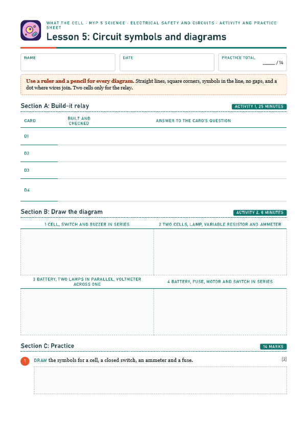

By the end of the lesson you can
- Recognise and draw the standard circuit symbols
- Draw circuit diagrams that follow the rules
- Build a circuit from its diagram
- Translate a real circuit or a description into a diagram
Keys: arrows or a presentation clicker move the slides, F for full screen. Slides with a red dot have a video or simulation.
Videos (all 5 minutes or less)
- 3:43
Components and symbols
Cognito. The standard circuit symbols, where meters go, and components whose resistance changes. Slide 8.
Simulations
- Lab
Circuit Practicals Lab: series and parallel
What the Cell. Each circuit is drawn as a diagram: compare the series and parallel diagrams with two and three lamps.
- PhET
Circuit Construction Kit: DC
PhET, University of Colorado Boulder. Build a circuit, then switch from the Lifelike to the Schematic view to see it as symbols.
Print and practise

Activity and practice sheet
Used in the lesson’s activities, with practice questions. Your teacher has the answers.
Download (PDF)Lesson 5 slides
All 21 slides in one file, to read again or print. The video buttons on the slides open YouTube.
Download the slides (PDF)Revising? The Revision tab on the unit page has the unit notes and review.
Class activity pack
Everything to print for the lesson’s activities: picture cards, sorting mats, station cards with their kit lists, and the teacher’s set-up notes. Print it before class.
Download the activity pack (PDF)Notes: Circuit symbols and diagrams
Why diagrams?
A circuit diagram uses standard symbols so that anyone, anywhere, can build the same circuit. It shows what is connected to what, not the real layout.
Key symbols
Cell (long thin line = +), battery, lamp (circle with a cross), switch open and closed, resistor (rectangle), variable resistor (rectangle with an arrow), ammeter (A), voltmeter (V), fuse, diode and LED.
Drawing rules
Use a ruler: straight lines and square corners. Put symbols in the line. Leave no gaps except an open switch. Draw a dot where wires join.
Meters in diagrams
An ammeter is drawn in the loop (in series). A voltmeter is drawn across the component whose p.d. it measures (in parallel).
Series or parallel?
Trace from + back to minus with your finger. One path means the components are in series. More than one path, with junction dots, means they are in parallel.
Switches in parallel circuits
A switch in the main line controls everything. A switch on one branch controls only that branch.
Key words
| circuit diagram | a drawing of a circuit using standard symbols |
|---|---|
| symbol | an agreed drawing that stands for a component |
| series | components one after another in a single loop |
| parallel | components on separate branches across the supply |
| junction | a point where wires join; shown by a dot |
| variable resistor | a resistor whose resistance can be changed |
| diode / LED | lets current through one way only / a diode that gives out light |